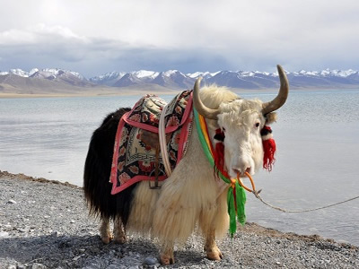
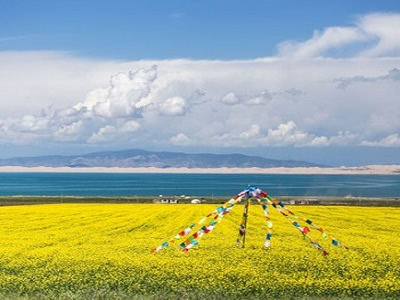

青海看氂牛
塔爾寺

塔爾寺四周群山環抱，狀似八瓣蓮花，視地觀天，陵澗起伏，狀如八輻法輪。
祥光照射下的梵宇佛寺獨具風格，宮殿式、平頂式建築依山就勢，巧妙布局。
巧奪天工的雄偉建築，恢宏壯觀，氣勢磅礴。體現了藏漢文化交匯融合的特色和風格。
佛殿、經堂內供奉的佛、菩薩、阿羅漢、神像等不同質料的塑像造型精美。
包括木雕、磚離、石雕、尺度技藝；佛像、佛塔、佛經、僧裝服飾的制作工藝；壁畫、堆繡、酥油花「三絕」藝術皆屬五明學的工藝學。
可可西里

位於青海的「可可西里」，蒙語意為「美麗的少女」，被譽為南北極之外的「世界第三極」，不但是野生動物的樂園，也是青藏高原珍稀野生動物基因庫，在自然環境保護，生物多樣性保護，科學研究和生態探險旅遊……各方面，均具有重要的科研和生態價值。
為中國最大的無人區之一，也是目前世界上原始生態環境保存最完整的地區之一，更是目前中國面積最大、海拔最高、野生動物資源最為豐富的自然保護區之一。
青海湖

青海湖，藏語名為“措溫布”（意為“青色的海”）。位於青藏高原東北部、青海省境內，中國最大的內陸湖、鹹水湖。
由祁連山脈的大通山、日月山與青海南山之間的斷層陷落形成。2014年，青海湖海心山北側出現“龍吸水”壯觀場景。
環湖及周邊主要景點為日月山、倒淌河、湖裡木溝岩畫、橡皮山、茶卡鹽湖、茶卡寺、伏埃古城、鳥島、海心山、北向陽古城、舍卜吉岩畫、尕海古城、金銀灘草原、原子城西海鎮、沙島、西海郡三角城。
門源油菜花

門源油菜花是指青海省海北藏族自治州的門源縣一種美麗而蔚為壯觀的人造景觀。門源縣是北方小油菜發源地，是全國乃至全世界最大的小油菜種植區，種植面積達50萬畝。
油菜花並不稀奇，哪裡都有，但門源的油菜花氣勢壯觀，北依祁連山，西起永安城，東到玉隆灘，南鄰大坂山，綿延上百公里，宛如金黃的大海。
濃豔的黃花，緊沿著浩門河畔，橫越門源盆地足有百公里，在高原深藍的天空下，與遠山近水，村落人家相輝映，近看遠觀皆為美景。
茶卡鹽湖

茶卡鹽湖，“茶卡”是藏語，意即鹽池，蒙古語“達布遜淖爾”，也就是青鹽的海。
九寨溝以原始的生態環境，一塵不染的清新空氣和雪山、森林、湖泊组合成神妙、奇幻、幽美的自然風光，呈現自然的美，美的自然。平靜的湖面像鏡子一樣，被譽為“天空之鏡”。
九寨溝的水更是九寨溝的靈魂，因清純潔淨、晶瑩剔透故有九寨溝歸來不看水之說。除外，九寨溝的動植物資源也非常豐富，原始森林遍布，棲息着大熊猫等珍貴野生動物。